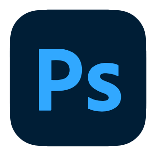
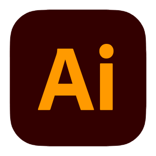
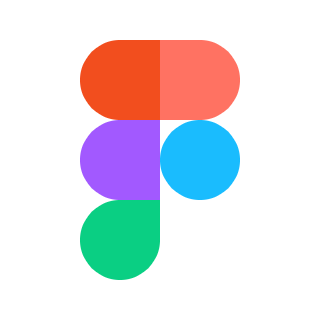
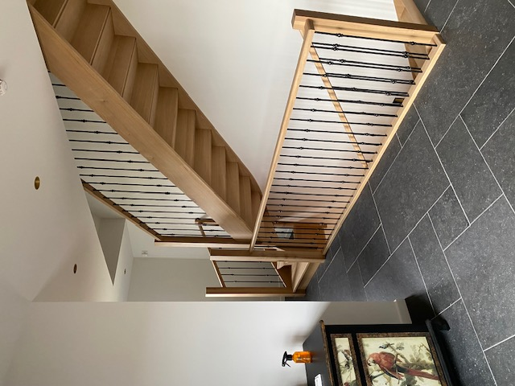

ADVERTISEMENT
GRAPHIC DESIGNVoor Graphic skills hadden we een kleine opdracht. Maak een advertentie, hierbij wou ik mijn kans pakken en deze voor RedBull doen.

Hi, ik ben Kayd Desair, 19 jaar en afkomstig uit Neerpelt. Ik ben afgestudeerd in Bijzondere Schrijnwerkconstructies. In mijn vrije tijd speel ik voetbal als aanvaller bij de reserven van Kadijk S.K.
Wat mij misschien onderscheidt, is dat ik altijd op zoek ben naar manieren om mezelf te verbeteren. Voor ik deze richting koos, volgde ik houtbewerking. Dat ging me goed af, maar ik wilde meer uitdaging en besloot daarom voor een richting te gaan waarin ik kon groeien en mezelf kon pushen voor nieuwe dingen te leren.
Ik weet van mezelf dat ik niet de meest creatieve persoon ben, maar juist daarom sprak deze opleiding me ook aan omdat ik graag werk met computers en mee wil zijn met het nieuwe en alle nieuwe dingen uitproberen. Ik wil leren out of the box denken, dingen ontwerpen waar mensen blij van worden en iets maken dat precies aansluit bij wat ze zoeken.
Waarom zou ik een goede designer zijn? Omdat ik het beste uit alles wil halen dat mogelijk is. Ik vind het belangrijk dat de persoon voor wie ik werk erop kan vertrouwen dat zijn opdracht in goede handen is. Mijn doel is om een resultaat af te leveren dat voldoet aan de verwachtingen of die zelfs overtreft.

Ik leer out of the box denken en ontwerp interfaces die precies aansluiten bij wat mensen zoeken.

Met precisie uit de schrijnwerkerij bouw ik nu digitale constructies die technisch perfect zijn.

Het beste uit alles halen. Ik zorg dat resultaten de verwachtingen van de klant overtreffen.


Een stevige basis in houtbewerking, met aandacht voor precisie, materiaalgevoel en vakmanschap.
Diepgaande kennis van maatwerk en complexe schrijnwerkconstructies, waar techniek en ontwerp samenkomen.
Een verbreding naar digitaal en visueel ontwerp, met focus op creativiteit, vormgeving en hedendaagse media.